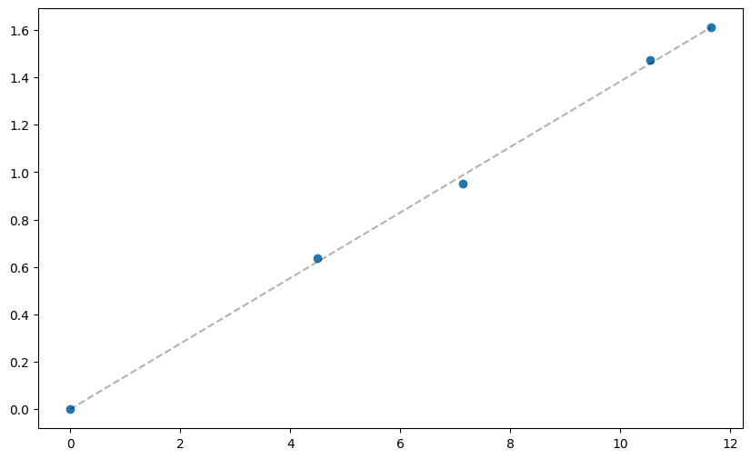
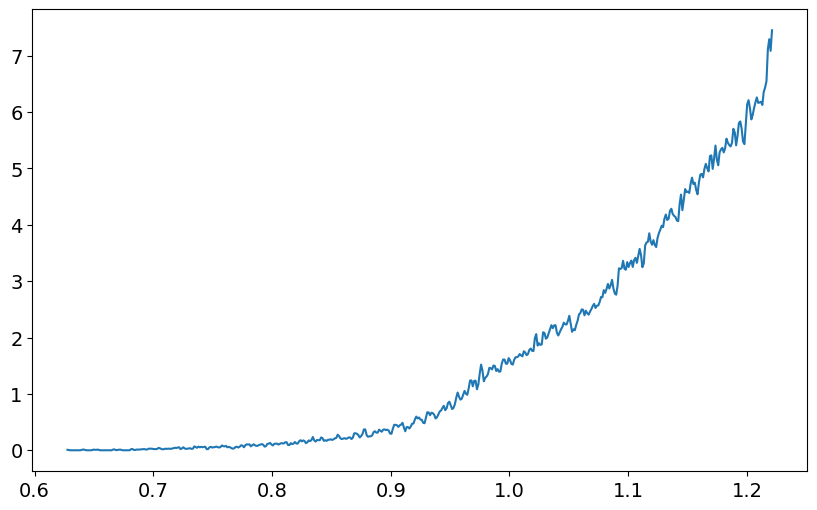

Chapter 10: Big Entropy and the Generalized Linear Model¶
[1]:
%load_ext jupyter_black
import arviz as az
import jax
import jax.numpy as jnp
import matplotlib.pyplot as plt
import numpyro.distributions as dist
seed = 84735
jrng = jax.random.key(seed)
plt.rcParams["figure.figsize"] = [10, 6]
WARNING:jax._src.xla_bridge:An NVIDIA GPU may be present on this machine, but a CUDA-enabled jaxlib is not installed. Falling back to cpu.
Code¶
Code 10.1¶
[2]:
p = {
"A": jnp.array([0, 0, 10, 0, 0]),
"B": jnp.array([0, 1, 8, 1, 0]),
"C": jnp.array([0, 2, 6, 2, 0]),
"D": jnp.array([1, 2, 4, 2, 1]),
"E": jnp.array([2, 2, 2, 2, 2]),
}
p
[2]:
{'A': Array([ 0, 0, 10, 0, 0], dtype=int32),
'B': Array([0, 1, 8, 1, 0], dtype=int32),
'C': Array([0, 2, 6, 2, 0], dtype=int32),
'D': Array([1, 2, 4, 2, 1], dtype=int32),
'E': Array([2, 2, 2, 2, 2], dtype=int32)}
Code 10.2¶
[3]:
p_norm = jax.tree.map(lambda x: x / jnp.sum(x), p)
p_norm
[3]:
{'A': Array([0., 0., 1., 0., 0.], dtype=float32),
'B': Array([0. , 0.1, 0.8, 0.1, 0. ], dtype=float32),
'C': Array([0. , 0.2, 0.6, 0.2, 0. ], dtype=float32),
'D': Array([0.1, 0.2, 0.4, 0.2, 0.1], dtype=float32),
'E': Array([0.2, 0.2, 0.2, 0.2, 0.2], dtype=float32)}
Code 10.3¶
[4]:
H = jax.tree.map(lambda q: -jax.scipy.special.xlogy(q, q).sum(), p_norm)
H
[4]:
{'A': Array(-0., dtype=float32),
'B': Array(0.6390318, dtype=float32),
'C': Array(0.95027053, dtype=float32),
'D': Array(1.4708085, dtype=float32),
'E': Array(1.609438, dtype=float32)}
Code 10.4¶
[5]:
ways = jnp.array([1, 90, 1260, 37800, 113400])
log_ways_pp = jnp.log(ways)
plt.scatter(log_ways_pp, H.values())
x = jnp.linspace(log_ways_pp.min(), log_ways_pp.max(), 30)
dy_dx = jnp.polyfit(log_ways_pp, jnp.array(list(H.values())), 1)
plt.plot(x, dy_dx[0] * x, "k--", alpha=0.3)
[5]:
[<matplotlib.lines.Line2D at 0x7d273c0e65d0>]

Code 10.5¶
[6]:
p = jnp.array(
[
[1 / 4, 1 / 4, 1 / 4, 1 / 4],
[2 / 6, 1 / 6, 1 / 6, 2 / 6],
[1 / 6, 2 / 6, 2 / 6, 1 / 6],
[1 / 8, 4 / 8, 2 / 8, 1 / 8],
]
)
(p * p.sum(axis=1)).sum(axis=1)
[6]:
Array([1., 1., 1., 1.], dtype=float32)
Code 10.6¶
[7]:
jax.scipy.special.entr(p).sum(axis=1)
[7]:
Array([1.3862944, 1.3296614, 1.3296614, 1.2130076], dtype=float32)
Code 10.7¶
[8]:
p = 0.7
A = jnp.array([(1 - p) ** 2, p * (1 - p), (1 - p) * p, p**2])
A
[8]:
Array([0.09, 0.21, 0.21, 0.49], dtype=float32)
Code 10.8¶
[9]:
jax.scipy.special.entr(A).sum()
[9]:
Array(1.2217286, dtype=float32)
Code 10.9¶
[10]:
def sim_p(i, G=1.4):
x123 = dist.Uniform().sample(jax.random.fold_in(jrng, i), sample_shape=(3,))
x4 = (G * jnp.sum(x123, keepdims=True) - x123[1] - x123[2]) / (2 - G)
z = jnp.sum(jnp.concatenate([x123, x4]))
p = jnp.concatenate([x123, x4]) / z
return {"H": -jnp.sum(p * jnp.log(p)), "p": p}
Code 10.10¶
[11]:
H = jax.vmap(lambda i: sim_p(i, G=1.4))(jnp.arange(int(1e5)))
az.plot_kde(H["H"], bw=0.0005)
plt.show()

Code 10.11¶
[12]:
entropies = H["H"]
distributions = H["p"]
Code 10.12¶
[13]:
entropies.max()
[13]:
Array(1.2217283, dtype=float32)
Code 10.13¶
[14]:
distributions[jnp.argmax(entropies)]
[14]:
Array([0.09013978, 0.209916 , 0.20980436, 0.49013984], dtype=float32)
[ ]: